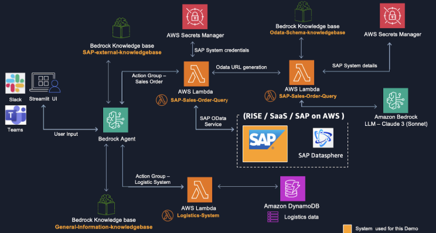
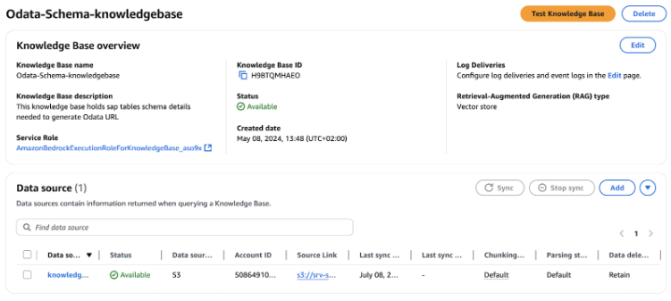
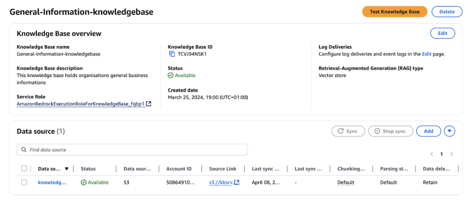
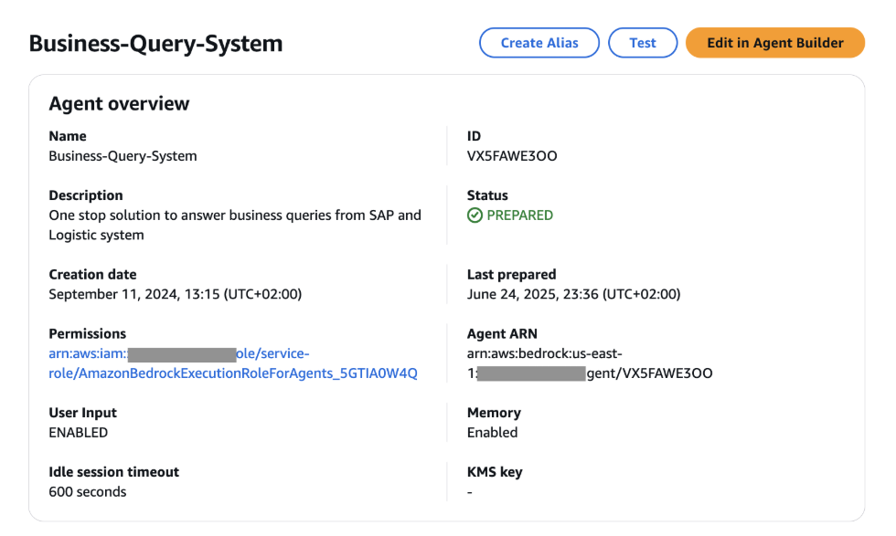
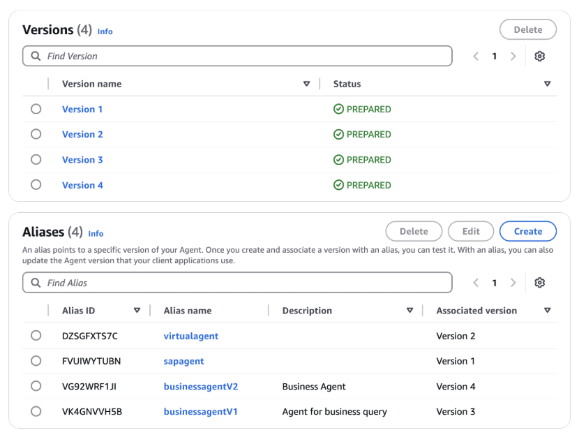
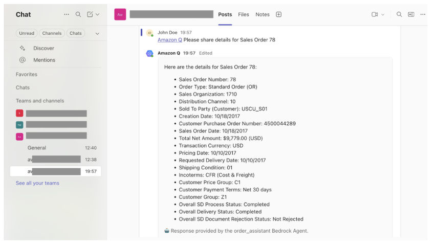
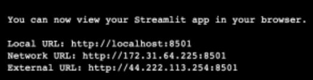

Blog 2
Agentic AI Assistant for SAP with AWS Generative AI
Written by Sourav Sadhu on September 4, 2025 in Amazon Bedrock, Amazon Bedrock Agents, Amazon Bedrock Knowledge Bases, SAP on AWS, Technical How-to Permalink Share
Introduction
SAP systems are the backbone of many enterprises, managing critical business processes and generating large volumes of high-value data. These critical business processes and data often extend beyond the core enterprise SAP systems, requiring customers to interact with external systems. As organizations look to leverage this data for deeper insights and improved decision-making, there is a growing need to transform how SAP customers interact with their data and systems.
The natural language processing (NLP) capabilities of generative AI provide SAP users with a powerful tool to interact with complex ERP systems using natural language questions, eliminating the need for deep technical knowledge or complex SQL queries. This democratizes data access across the organization, enabling business users to ask questions, generate reports, and gather real-time insights through conversational interfaces.
Integrating generative AI with SAP systems enables organizations to bridge the gap between structured ERP data and unstructured information from SAP and non-SAP sources, providing a more holistic view of their business context. This integration can lead to more accurate forecasting, personalized customer experiences, and data-driven decisions that span the entire enterprise ecosystem.
AWS and SAP empower customers at every stage of their generative AI adoption journey with a rich portfolio of advanced generative AI services, robust infrastructure, and implementation resources. These services integrate with SAP systems and complement the broader cloud service ecosystems of both AWS and SAP.
In this blog post (Part 1 of a 2-part series), I will describe and demonstrate how you can leverage Amazon Bedrock and other AWS services to derive insights from SAP and non-SAP data sources using human natural language through a unified interface exposed via MS Teams, Slack, and a Streamlit UI.
In Part 2 of this blog series, I will describe and demonstrate how you can leverage SAP BTP services [SAP Build Apps, SAP Generative AI Hub] to derive insights from SAP and non-SAP systems using natural language via a unified interface using SAP Build Apps as the front-end UI.
Overview
I will start by developing the business logic required to extract data from the SAP system. I will create two AWS Lambda functions to execute the business logic, supported by various AWS services including Bedrock Knowledge Bases and AWS Secrets Manager. I will then focus on creating the business logic to process data from an additional non-SAP data source by deploying another Lambda function that is designed specifically to extract data from Amazon DynamoDB, where logistics information is stored. To enhance the system’s capabilities, I will set up a knowledge base that will act as a third data source, supporting general user queries. Next, I will deploy an Amazon Bedrock Agent responsible for orchestrating the flow between the different data sources based on the user’s query. In the final stage, I will build a user interface using Streamlit, while also providing an alternative integration option with MS Teams and Slack to increase accessibility.

Figure 1. High-level architecture
Implementation guide
I have structured the solution into 5 steps. Let’s walk through each step:
Step 1 – Create business logic to fetch data from the SAP system
Step 2 – Create business logic to fetch data from the non-SAP system
Step 3 – Create Bedrock knowledge bases for general queries
Step 4 – Create Bedrock Agents to orchestrate between different data sources
Step 5 – Build user interfaces with Microsoft Teams, Slack, and Streamlit
Prerequisites
An AWS account with appropriate IAM permissions to work with Amazon S3, AWS Lambda, Amazon Bedrock Agents, Amazon Bedrock Knowledge Bases, Amazon Bedrock LLM (Claude), AWS Secrets Manager, and Amazon DynamoDB. If you are new to these services, you should review them before proceeding.
- An SAP system that supports SAP OData services as the data source for SAP Sales Orders.
- I have used the standard OData service SAP Sales Order Service: API_SALES_ORDER_SRV and the Entity Set A_SalesOrder for this demo. However, you can use any OData service depending on your use case. I have exposed the OData service over the internet, but depending on where your SAP system is hosted, you may choose not to expose it over the internet. We recommend setting up a private connection for better performance and security. For more information, see How to enable OData services in SAP S/4HANA and Connecting to RISE from your AWS account.
- A Slack account for Slack integration and an MS Teams account for MS Teams integration [optional].
Step 1 – Create business logic to fetch data from the SAP system
I. I will start by creating a secret in AWS Secrets Manager to store the credentials and connection details of the S4 system.
Choose the secret type Other type of secret and then add the following details in the Key/Value pairs. Set the secret values specific to your environment.
| Secret key | Secret value |
|---|---|
| S4_host_details | https://<hostname>:<port> |
| S4_username | xxxx |
| S4_password | xxxx |
For more information, see Create a secret in AWS Secrets Manager.
II. As the second step, I will create two Bedrock knowledge bases to supplement and support SAP data when required.
- Odata-Schema-knowledgebase: I will use this knowledge base to provide schema details to the LLM, so that the model has sufficient knowledge of which attributes to use when constructing the OData URL based on the user’s query.
- SAP-external-knowledgebase: I will use this knowledge base to provide additional details for non-SAP data.
I considered the following inputs when creating the two knowledge bases, with all other settings kept at their default values.
- Provide knowledge base details
- Knowledge base name: Choose a name for each knowledge base with a user-friendly description. I used Odata-Schema-knowledgebase and SAP-external-knowledgebase.
- Knowledge base description: Provide a description that uniquely identifies your knowledge base.
- IAM permissions: Choose Create and use a new service role.
- Data source configuration
- Data source: Choose Amazon S3.
- Data source name: Choose a name for each data source.
- S3 URI: Create two S3 buckets, one for each knowledge base. Upload the file Sales_Order_Schema.json for Odata-Schema-knowledgebase and Shipping_Policy.pdf for SAP-external-knowledgebase from the GitHub repository to the corresponding S3 buckets and provide the S3 URIs.
- Storage and data handling configuration
- Embeddings model: Amazon Titan Text Embeddings V2.
- Vector database: For Vector creation method, choose Create a new vector store quickly, and use Amazon OpenSearch Serverless as the vector store.
For more information, see Create a knowledge base by connecting to a data source in Amazon Bedrock Knowledge Bases.
This is my final view

III. Now, I will create two Lambda functions to extract data from the SAP system based on the user’s query.
- SAP-Odata-URL-Generation: This Lambda function executes the business logic to generate an OData URL based on the user’s query using the LLM, supplemented by schema details from the knowledge base and host details from AWS Secrets Manager.
- SAP-Sales-Order-Query: This Lambda function executes the core business logic to retrieve data from the SAP system. It uses the OData URL provided by the SAP-Odata-URL-Generation function and securely accesses the system credentials stored in AWS Secrets Manager. The function then processes the retrieved data, leveraging the LLM through Bedrock, and finally presents structured information back to the Bedrock Agent for further use.
I considered the following inputs when creating the Lambda functions, keeping all other settings at their default values.
- Choose Author from scratch.
- Function name: Choose a name for each function with a user-friendly description. I selected SAP-Odata-URL-Generation and SAP-Sales-Order-Query.
- Runtime: Python 3.13.
- Architecture: x86_64.
- Code: Copy the code from
SAP-Odata-URL-Generation.pyfor the SAP-Odata-URL-Generation function andSAP-Sales-Order-Query.pyfor the SAP-Sales-Order-Query function from the GitHub repository. Note: Adjust the code with deployment-specific values such askb_id,SecretId, and so on. - Configuration: Memory: 1024 MB, Timeout: 15 minutes.
- Layers: Add the
requests-layer.ziplayer from the GitHub repository to include therequestsmodule in the Lambda function. - Permissions: The following permissions need to be configured for the Lambda functions.
- SAP-Odata-URL-Generation:
- Execution role – In addition to the basic Lambda execution role, create a new IAM policy with the following actions:
bedrock:InvokeModel,bedrock-agent-runtime:Retrieve,secretsmanager:GetSecretValue. - Resource-based policy –
lambda:InvokeFunctionpermission for the ARN of the Bedrock Agent that we will create in Step 4.
- Execution role – In addition to the basic Lambda execution role, create a new IAM policy with the following actions:
- SAP-Sales-Order-Query:
- Execution role – In addition to the basic Lambda execution role, create a new IAM policy with the following actions:
bedrock:InvokeModel,secretsmanager:GetSecretValue. - Resource-based policy –
lambda:InvokeFunctionpermission for the ARN of the Bedrock Agent that we will create in Step 4.
- Execution role – In addition to the basic Lambda execution role, create a new IAM policy with the following actions:
- SAP-Odata-URL-Generation:
For more information, see Building Lambda functions with Python and Working with Lambda layers for Python functions.
Step 2 – Create business logic to fetch data from the non-SAP system
I. I will start by creating a DynamoDB table with the following inputs:
- Table name: logistics
- Partition key: order_id
Use the Items.json file from the GitHub repository to create items in the DynamoDB table. For more information, see Creating Amazon DynamoDB table items from a JSON file.
II. Now, I will create a Lambda function to extract data from the DynamoDB table based on the user’s query.
- Choose Author from scratch.
- Function name: Choose a name for the function with a user-friendly description. I chose Logistics-System.
- Runtime: Python 3.13.
- Architecture: x86_64.
- Configuration: Memory: 1024 MB, Timeout: 15 minutes.
- Code: Copy the code from
Logistics-System.pyfrom the GitHub repository. - Permissions: Add the following permissions to the Lambda function.
- Execution role – In addition to the basic Lambda execution role, create a new IAM policy with the following actions:
dynamodb:Query,dynamodb:DescribeTable. - Resource-based policy –
lambda:InvokeFunctionpermission for the ARN of the Bedrock Agent that we will create in Step 4.
- Execution role – In addition to the basic Lambda execution role, create a new IAM policy with the following actions:
Step 3 – Create a knowledge base for general queries
Now, I will create a third knowledge base. This knowledge base will act as a general information repository. Users can access this resource to learn about different topics, from organizational information to topic-specific expertise, depending on their needs.
General-information-knowledgebase: In this demo, I will use this knowledge base to provide guidance on SAP business processes.
I considered the following inputs when creating the knowledge base, keeping the rest of the settings at their default values.
- Provide knowledge base details
- Knowledge base name: Choose a name for the knowledge base. I used General-information-knowledgebase with a user-friendly description.
- IAM permissions: Choose Create and use a new service role.
- Data source configuration
- Data source: Choose Amazon S3.
- Data source name: Choose any name for the data source.
- S3 URI: Create an S3 bucket, upload the file “How to create SAP Sales Order pdf” from the GitHub repository, and provide the corresponding S3 URI.
- Storage and data handling configuration
- Embeddings model: Amazon Titan Text Embeddings V2.
- Vector database: For Vector creation method, choose Create a new vector store quickly and use Amazon OpenSearch Serverless as the vector store.
This is my final view

Step 4 – Create a Bedrock Agent
In this step, I will create a Bedrock Agent to help orchestrate between the different data sources that we have created in the previous steps in order to answer user queries.
I considered the following inputs when creating the Bedrock Agent, keeping all other settings at their default values.
- Agent details:
- Agent name: Choose a name and a user-friendly description for the agent. I named it Business-Query-System.
- Agent resource role: Choose Create and use a new service role.
- Choose model: Select Claude 3 Sonnet v1. You may choose another LLM, but you will need to adjust the prompts accordingly to achieve the desired responses.
- Instructions for the Agent: Provide detailed, step-by-step instructions clearly describing what you want the Agent to do.
You are an AI assistant that helps users query SAP sales data directly from the SAP system and shipping details from the logistics system. You also help users with general business process queries using the company knowledge bases.
-
Additional settings: Enable User input.
-
Action groups: Action groups define the tasks the agent should help the user perform.
- Action group: SAP-Sales-Order – I will use this action group to handle any query related to SAP sales orders.
- Action group name: Choose a name and provide a user-friendly description. I used SAP-Sales-Order.
- Action group type: Defined by function details.
- Invocation method: Choose Use an existing Lambda function and select the Lambda function created in Step 1, SAP-Sales-Order-Query.
- Action function name 1:
SalesOrderand provide a description for the function.
- Action group: Logistics-System – I will use this action group to handle any query related to logistics information for sales orders.
- Action group name: Choose a name and provide a user-friendly description. I used Logistics-System.
- Action group type: Defined by API schema.
- Invocation method: Choose Use an existing Lambda function and select the Lambda function created in Step 2, Logistics-System.
- Action group schema: Choose an existing API schema.
- S3 URL: Create an S3 bucket, upload the
logistics.jsonfile from the GitHub repository to the S3 bucket, and provide the S3 URL.
- Action group: SAP-Sales-Order – I will use this action group to handle any query related to SAP sales orders.
-
Memory: Choose Enabled with a memory time of 2 days and a maximum of 20 recent sessions.
-
Knowledge bases: Add the previously created knowledge bases.
- Select knowledge base: SAP-external-knowledgebase.
Knowledge base instructions for the Agent: Use this knowledge base when you need information external to the SAP system and combine it with SAP system data to complete your response.
- Select knowledge base: General-information-knowledgebase.
Knowledge base instructions for the Agent: Use this knowledge base to answer general business questions from the user that are not directly available from the SAP system.
-
Orchestration configuration – Default orchestration. Bedrock Agents provide default prompt templates, but these can be customized to meet specific requirements. I will customize the following prompt templates to fit our use case.
- Pre-processing: Choose Override default pre-processing template. Add the following section to the prompt template:
- Category F: Questions that can be answered or supported by the agent calling our function-based tools using the provided functions and arguments from the conversation history or relevant arguments gathered using the askuser function AND also require external data from the knowledge bases to complete the response. Combine data from the SAP system or the non-SAP Logistics system and the external knowledge base to prepare the final answer.
-
Orchestration: Choose Override default orchestration template. Add the following text to the corresponding sections in the prompt template.
$knowledge_base_guideline$
-
If any data such as the delivery date is not updated in the Logistics system, then check the knowledge base named
SAP-external-knowledgebaseto find the estimated delivery time based on the shipping category. Then, take that duration and add it to the “Order Received” date and share the estimated delivery date with the user. -
If the SAP system returns an error because the requested data is not available, check the knowledge base named
SAP-external-knowledgebasefor the explanation of the ERROR CODE. Respond to the user only with the explanation of the error code.
$tools_guidelines$ [This section does not exist by default; we need to create it]
-
Call the
SAP-Sales-Ordertool only for any questions related to sales orders. -
Call the
Logistics-Systemtool only for any shipping details for sales orders. -
DO NOT call both tools
SAP-Sales-OrderandLogistics-Systemunless the user explicitly asks for both pieces of information.
$multiple_tools_guidelines$ [This section does not exist by default; we need to create it]
- If the user’s question requires calling more than one tool, call the tools one by one. Collect the responses from both tools and then combine them before replying to the user.
For example, if the user asks for both Sales Order and Logistics information, first fetch the Sales Order details using the Sales Order tool. Then, fetch the logistics details using the Logistics tool. Finally, combine both responses into one when responding to the user.
-
After entering all the details, I will choose Save, and then choose Prepare to update the agent with the latest changes. To navigate to the agent dashboard, select Save and exit.
Finally, create an Alias to have a specific snapshot or version of the agent that will be used by applications.
Choose Create alias, provide an alias name with a user-friendly description.
Choose Create new version and link it with this alias for a version with default On-demand throughput.
For more information, see Create and configure an agent manually.
This is my final view


Now, I need to adjust the IAM roles for the Lambda functions so that the Bedrock Agent can invoke them.
Follow the steps in Using resource-based policies for Lambda and attach the following resource-based policy to the Lambda function to allow Amazon Bedrock to access the Lambda function for the agent’s action groups, replacing the ${values} as needed.
JSON
{
"Version": "2012-10-17",
"Statement": [
{
"Sid": "AccessLambdaFunction",
"Effect": "Allow",
"Principal": {
"Service": "bedrock.amazonaws.com"
},
"Action": "lambda:InvokeFunction",
"Resource": "arn:aws:lambda:${region}:${account-id}:function:function-name",
"Condition": {
"StringEquals": {
"AWS:SourceAccount": "${account-id}"
},
"ArnLike": {
"AWS:SourceArn": "arn:aws:bedrock:${region}:${account-id}:agent/${agent-id}"
}
}
}
]
}
This is my policy
{
"Version": "2012-10-17",
"Id": "default",
"Statement": [
{
"Sid": "bedrock-agent-sales",
"Effect": "Allow",
"Principal": {
"Service": "bedrock.amazonaws.com"
},
"Action": "lambda:InvokeFunction",
"Resource": "arn:aws:lambda:us-east-1:1234567xxxx:function:SAP-Sales-Order-Query",
"Condition": {
"StringEquals": {
"AWS:SourceAccount": "1234567xxxx"
},
"AWS:SourceArn": {
"arn:aws:bedrock:us-east-1: 1234567xxxx:agent/VX5FAWE3OO"
}
}
}
]
}
Step 5 – Build user interfaces with Microsoft Teams, Slack, and Streamlit
This step involves developing user interfaces that allow users to interact with the Bedrock Agent.
- Microsoft Teams – This integration requires access to MS Teams (with the appropriate permissions) and Amazon Q Developer in the chat application. Amazon Q Developer in the chat application (formerly AWS Chatbot) allows you to interact with Bedrock GenAI Agents within Microsoft Teams.
Step 1: Configure app access
Microsoft Teams must be installed and approved by your organization’s administrator.
Step 2: Configure the Teams channel
Create a standard MS Teams channel or use an existing channel and add Amazon Q Developer to the channel. [Note: A standard channel is required because Microsoft Teams currently does not support Amazon Q Developer in private channels.]
- In Microsoft Teams, find and select your team name, then choose Manage team.
- Select Apps, then choose Add app.
- Enter Amazon Q Developer in the search bar to find the app.
- Select the bot.
- Choose Add to a team and complete the prompts.
Step 3: Configure Amazon Q Developer for the Teams client
This step grants Amazon Q Developer in the chat application access to your MS Teams channel.
- Open Amazon Q Developer in chat from the AWS console.
- Under Chat client configuration, choose Microsoft Teams, copy and paste the Microsoft Teams channel URL that we created in the previous step, and then choose Configure. [You will be redirected to a Teams authorization page to request permission for Amazon Q Developer to access the information.]
- On the Microsoft Teams authorization page, choose Accept. On the left side, you will now see your Teams channel listed under Microsoft Teams.
Next, I will link the Teams channel with my configuration.
On the Teams details page in the Amazon Q Developer console, choose Create new channel configuration. I used the following inputs for my configuration, keeping the remaining options at their default values.
- Configuration details:
- Configuration name: Choose a name for your configuration. I named mine aws-sap-demos-team.
- Microsoft Teams channel:
- Channel URL: Copy and paste the Microsoft Teams channel URL that we created in Step 2.
- Permissions:
- Role settings: Choose Channel role.
- Channel role: Choose Create an IAM role from a template.
- Role name: Choose any name. I used awschatbot-sap-genai-teams-role.
- Policy template: Amazon Q Developer access.
- Channel guardrail policies [Policy names]: AWSLambdaBasicExecutionRole, AmazonQDeveloperAccess. You can adjust IAM policies as required, but following the principle of least privilege is always recommended.
Step 4: Connect the agent to the chat channel
Connecting the Amazon Q Developer Bedrock Agent requires the IAM action bedrock:InvokeAgent.
Add the following policy to the IAM role awschatbot-sap-genai-teams-role created in the previous step.
JSON
{
"Sid": "AllowInvokeBedrockAgent",
"Effect": "Allow",
"Action": "bedrock:InvokeAgent",
"Resource": [
"arn:aws:bedrock:aws-region:<AWS Account ID>:agent-alias/<Bedrock Agent ID>/<Agent Alias ID>/"
]
}
To add the Bedrock Agent to your chat channel, enter the following. Choose any connection name you like.
@Amazon Q connector add connector_name arn:aws:bedrock:aws-region:AWSAccountID:agent/AgentID AliasID
My entry looks like this:
@Amazon Q connector add order_assistant arn:aws:bedrock:us-east-1:xxxxxxx:agent/VX5FAWE3OO VG92WRF1JI
For more information, see Tutorial: Get started with Microsoft Teams
The Teams interface looks like this

- Slack – This integration requires access to Slack (with the appropriate permissions) and Amazon Q Developer in the chat application. Amazon Q Developer in the chat application (formerly AWS Chatbot) allows you to interact with Bedrock GenAI Agents in Slack.
Step 1: Configure app access
The workspace administrator must approve the use of the Amazon Q Developer app in your Slack workspace.
Step 2: Configure the Slack channel
Create a Slack channel or use an existing channel and add Amazon Q Developer to the Slack channel.
In your Slack channel, type /invite @Amazon Q and choose Invite Them.
Step 3: Configure Amazon Q Developer for the Slack client
This step grants Amazon Q Developer in the chat application access to your Slack workspace.
- Open Amazon Q Developer in chat from the AWS console. Under Chat client configuration, choose Slack, then select Configure. [You will be redirected to a Slack authorization page to request permission for Amazon Q Developer to access information.]
- Select the Slack workspace that you want to use with Amazon Q Developer and choose Allow.
- On the left side, you will now see your Slack workspace listed under Slack.
Next, I will link a channel with my configuration.
On the Workspace details page in the Amazon Q Developer console, choose Create new channel configuration. I used the following inputs for my configuration, with the rest kept at their default values.
- Configuration details:
- Configuration name: Choose a name for your configuration. I named it sap-genai-slack-chatbot.
- Amazon internal options:
- Account classification: Choose Non-production.
- Slack channel:
- Channel ID: Provide the channel ID of the Slack channel that you configured in Step 2.
- Permissions:
- Role settings: Choose Channel role.
- Channel role: Choose Create an IAM role from a template.
- Role name: Choose any name. I used aws-sap-genai-chatbot-role.
- Policy template: Amazon Q Developer access.
- Channel guardrail policies [Policy names]: AWSLambdaBasicExecutionRole, AmazonQDeveloperAccess. You can adjust IAM policies according to your needs, but following the principle of least privilege is recommended.
Step 4: Connect the agent to the chat channel
Connecting the Amazon Q Developer Bedrock Agent requires the IAM action bedrock:InvokeAgent.
Add the following policy to the IAM role awschatbot-sap-genai-teams-role created earlier.
JSON
{
"Sid": "AllowInvokeBedrockAgent",
"Effect": "Allow",
"Action": "bedrock:InvokeAgent",
"Resource": [
"arn:aws:bedrock:aws-region:<AWS Account ID>:agent-alias/<Bedrock Agent ID>/<Agent Alias ID>/"
]
}
To add the Bedrock Agent to your Slack channel, enter the following. Choose any connection name you like.
@Amazon Q connector add connector_name arn:aws:bedrock:aws-region:AWSAccountID:agent/AgentID AliasID.
My entry looks like this:
@Amazon Q connector add order_assistant arn:aws:bedrock:us-east-1:xxxxxxx:agent/VX5FAWE3OO VG92WRF1JI
For more information, see Tutorial: Get started with Slack
The Slack interface looks like this

- Streamlit – Streamlit is an open-source Python framework commonly used to build interactive web applications from Python scripts. I followed the steps below to host the application on an Amazon EC2 instance.
- Launch an EC2 instance; I used an Amazon Linux t2.micro instance.
- Set up the EC2 instance with the required security group allowing HTTP/HTTPS traffic (ports 80/443/8501 or any other port you choose to use).
- Prepare the environment as follows:
Install required packages
sudo apt update
sudo apt-get install python3-venv
Set up a virtual environment
mkdir streamlit-demo
cd streamlit-demo
python3 -m venv venv
source venv/bin/activate
-
Install Streamlit
pip install streamlit
-
Create a file named
streamlit-app.pyusing a text editor such as vi/vim/nano and copy the code fromstreamlit-app.pyin the GitHub repository. -
Run the Streamlit application with the following command:
nohup streamlit run streamlit-app.py &
-
Streamlit assigns an available port starting at 8501, incrementing by 1. If you want Streamlit to use a specific port, you can use:
streamlit run streamlit-app.py –server.port XXXX
After running the above commands, I can see the URL to open the Streamlit application in my browser, as shown below.

The Streamlit application looks like this

Cost
Running Large Language Models (LLMs) requires significant infrastructure, development, and maintenance costs. However, AWS services such as Amazon Bedrock can significantly reduce these costs through simplified infrastructure management, optimized development workflows, flexible pricing models, and different cost-optimization options to access LLMs of your choice.
| AWS Service – US East (N. Virginia) | Usage | Estimated cost [running for one hour] |
|---|---|---|
| Bedrock – Foundation LLM inference [Claude 3.5 Sonnet] | 100K Input tokens, 200K Output tokens | $3.3 |
| Bedrock – Embeddings model inference [Amazon Titan Text Embeddings v2] | 100 documents, average 500 words per doc | $0.10 |
| OpenSearch Compute Unit (OCU) – Indexing | 2 OCU [minimum 2 OCU] | $0.48 |
| OpenSearch Compute Unit (OCU) – Search and Query | 2 OCU [minimum 2 OCU] | $0.48 |
| OpenSearch Managed Storage | 10GB | $0.24 |
| EC2 Instance [Streamlit application] | t2.micro | $0.0116 |
| Lambda, Secrets Manager, DynamoDB | $0.2 | |
| Estimated cost to use the application for one hour – $4.8116 |
For more information, see Amazon Bedrock pricing, Amazon OpenSearch Service Pricing, Amazon EC2 On-Demand Pricing, AWS Lambda pricing, AWS Secrets Manager pricing, Amazon DynamoDB pricing
Conclusion
This blog demonstrates how to build an intelligent virtual assistant that interacts seamlessly with both SAP and non-SAP systems using AWS services, with a focus on Amazon Bedrock. The solution integrates SAP systems for sales order data, non-SAP systems for logistics information, and knowledge bases for additional details, all of which are accessible through multiple user interfaces including Streamlit, Microsoft Teams, and Slack. By leveraging a suite of AWS services such as Lambda, Bedrock, Secrets Manager, and DynamoDB, the implementation enables natural language interaction with complex enterprise systems, providing unified access to diverse data sources while maintaining strong security. The serverless architecture and pay-as-you-go pricing model make this solution accessible and cost-effective for organizations looking to enhance data accessibility through conversational AI interfaces. The blog offers a detailed, step-by-step guide for deploying this solution, paving the way for enterprises to harness generative AI in their SAP and non-SAP environments.
Experience firsthand how this solution can transform the way you interact with enterprise data by deploying it in your environment. Accelerate your digital transformation by exploring our comprehensive suite of machine learning services, including Amazon AgentCore (Preview) for deploying and operating secure AI agents at scale, Amazon Forecast for predictive analytics, Amazon Textract for intelligent document processing, Amazon Translate for language translation, and Amazon Comprehend for natural language processing. These services integrate seamlessly with SAP to meet diverse business needs and unlock new possibilities for your organization.
Visit the AWS for SAP page to learn why thousands of customers trust AWS to migrate and innovate with SAP.
TAGS: #saponaws, RISE with SAP, S/4HANA, SAP applications, SAP Beyond, SAP transformation